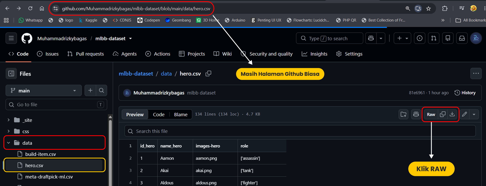
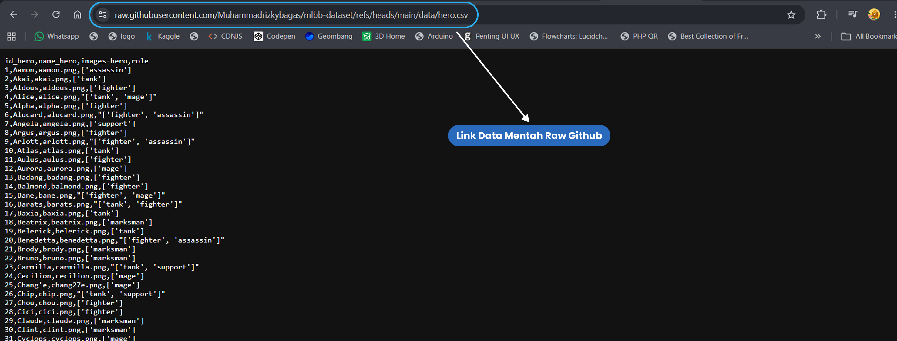

MEMBACA DATASET DARI RAW GITHUB
1 Apa Itu Dataset
Kumpulan data yang disusun dalam bentuk tabel, sehingga bisa dipakai untuk analisis. Sebuah dataset biasanya terdiri dari:
Baris (rows): satu baris = satu observasi atau satu data.Kolom (columns): satu kolom = satu variabel atau atribut
Contoh dataset kecil:
| Name | Role |
|---|---|
| Miya | Marksman |
| Balmond | Fighter |
| Saber | Assassin |
| Alice | Mage |
| Tigreal | Tank |
Pada latihan ini kita memakai dataset hero Mobile Legends. Datasetnya berisi 133 hero dan disimpan di GitHub.
2 Kenapa Dataset Disimpan di GitHub?
Dataset bisa disimpan di repository GitHub supaya bisa diakses lewat internet. Alurnya seperti ini:
NoteKeuntungannya
File dataset tidak perlu dipindahkan manual ke setiap komputer. Selama URL masih bisa dibuka, R bisa mengambil datanya langsung.
3 URL Halaman GitHub vs URL Raw
Ini hal yang paling penting: URL halaman GitHub dan URL raw itu berbeda
TipURL Halaman Github
Dipakai untuk melihat file lewat browser. Contoh:
https://github.com/Muhammadrizkybagas/mlbb-dataset/blob/main/data/hero.csv

Halaman ini berisi tampilan website GitHub (menu, tombol, dll), bukan data mentah. Karena itu R tidak bisa membaca data dari URL ini.
NoteURL Raw Github
Hanya berisi isi file (data mentahnya saja). Inilah yang dibutuhkan R:
Formatnya:
https://github.com/Muhammadrizkybagas/mlbb-dataset/blob/main/data/hero.csv

TipTips
cara cepat mengenali URL raw adalah dari alamatnya. Kalau diawali github.com berarti URL halaman biasa. Kalau diawali raw.githubusercontent.com berarti URL raw.
4 Membaca Dataset
Sekarang kita baca datanya di R. Tulis kode berikut di chunk R pada file .qmd kamu:
# baca dataset hero dari raw GitHub
url_hero <-
"https://raw.githubusercontent.com/Muhammadrizkybagas/mlbb-dataset/refs/heads/main/data/hero.csv"
data_hero <- read.csv(url_hero, stringsAsFactors = FALSE)url_hero: variabel untuk menyimpan alamat raw URL.read.csv(): fungsi untuk membaca file CSV, bisa dari file lokal maupun dari URL.stringsAsFactors=FALSE: supaya kolom teks tetap dibaca sebagai teks biasa.data_hero: tempat hasil baca disimpan (berupa data frame).
Setelah itu, cek isi datanya dulu sebelum dipakai:
head(data_hero) # lihat 6 baris pertama id_hero name_hero images.hero role
1 1 Aamon aamon.png ['assassin']
2 2 Akai akai.png ['tank']
3 3 Aldous aldous.png ['fighter']
4 4 Alice alice.png ['tank', 'mage']
5 5 Alpha alpha.png ['fighter']
6 6 Alucard alucard.png ['fighter', 'assassin']nrow(data_hero) # jumlah baris (hasilnya 133)[1] 133names(data_hero) # nama kolom[1] "id_hero" "name_hero" "images.hero" "role" 5 Menampilkan Gambar Hero
Kolom images.hero baru berisi nama file gambar (misalnya aamon.png). Supaya tampil sebagai gambar, kita ubah nama file itu menjadi tag HTML <img> dengan paste0().
# alamat folder gambar di GitHub (raw URL)
image_base <-
"https://raw.githubusercontent.com/Muhammadrizkybagas/mlbb-dataset/refs/heads/main/img/images-hero/"
# ubah nama file menjadi tag gambar
data_hero$images.hero <- paste0(
'<img src="', image_base, data_hero$images.hero,
'" style="height:60px; width:auto; border-radius:50%;">'
)6 Menampilkan Dataset
Fungsi datatable() berasal dari package DT. Jika belum pernah dipasang, jalankan sekali di Console:
install.packages("DT")
Lalu panggil library-nya dan tampilkan tabel:
library(DT)
datatable(
data_hero,
escape = FALSE, # agar tag <img> dibaca sebagai gambar
filter = "top", # kotak filter di atas tiap kolom
rownames = FALSE, # sembunyikan nomor baris bawaan
options = list(
pageLength = 5, # tampilkan 5 baris per halaman
scrollX = TRUE # tabel bisa digeser ke samping
)
)Hasilnya adalah tabel interaktif: kamu bisa mencari data (search), memfilter per kolom, mengurutkan, dan berpindah halaman. Dataset hero ini terdiri dari 133 data, jadi akan muncul sekitar 27 halaman dengan 5 baris per halaman.
7 Kode Lengkap
Salin URL dan data raw github dapat digunakan. Lihat kode di bawah ini.
data <- read.csv(
"https://raw.githubusercontent.com/Muhammadrizkybagas/mlbb-dataset/refs/heads/main/data/hero.csv"
)
# url gambar
image_base <- "https://raw.githubusercontent.com/Muhammadrizkybagas/mlbb-dataset/refs/heads/main/img/images-hero/"
# Ubah nama file menjadi gambar
data$images.hero <- paste0(
'<img src="',
image_base,
data$images.hero,
'" style="height:80px; width:auto; border-radius:100%">'
)
datatable(
data,
escape = FALSE,
filter = "top",
rownames = FALSE,
options = list(
pageLength = 5,
scrollX = TRUE
)
)8 Kesalahan Yang Sering Terjadi
| Masalah | Kemungkinan Penyebab |
|---|---|
| Error saat read.csv() | Memakai URL GitHub, bukan URL raw. |
| Error datatable | Belum menjalankan library(DT). |
9 Ringkasan
- Dataset bisa disimpan di GitHub dan dibaca langsung oleh R.
- Gunakan raw URL (raw.githubusercontent.com), bukan URL halaman biasa.
- Baca data dengan read.csv(url).
- Tampilkan tabel interaktif dengan datatable() dari package DT.
- Pakai escape = FALSE jika kolom berisi tag HTML seperti gambar